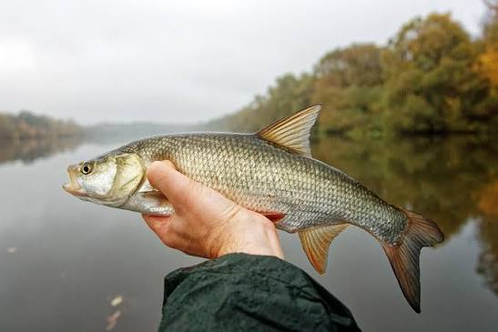

🐟 Boleń
Boleń to drapieżna ryba z rodziny karpiowatych. Żyje głównie w rzekach i poluje na mniejsze ryby, często atakując je blisko powierzchni wody.
📋 Podstawowe informacje
Rozmiar
Zwykle 40–70 cm
Waga
Duże osobniki mogą ważyć kilka kg
Występowanie
Głównie rzeki i duże zbiorniki
Trudność
Trudna
🎣 Jak złowić bolenia?
🐟 Przynęta
Na spinning sprawdzają się niewielkie, smukłe przynęty imitujące małe ryby.
📍 Gdzie szukać?
Szukaj go w rzekach, szczególnie w miejscach z nurtem, przy główkach, rafach i innych zmianach prądu wody.
☀️ Kiedy łowić?
Boleń jest aktywny w cieplejszych miesiącach i często można zauważyć jego polowanie przy powierzchni.